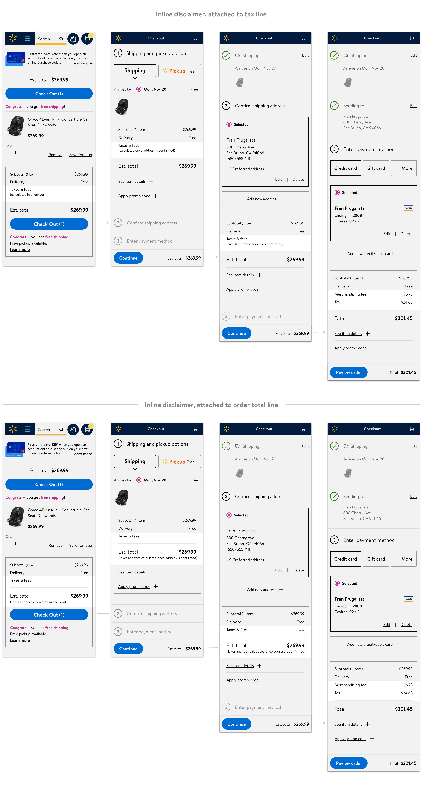
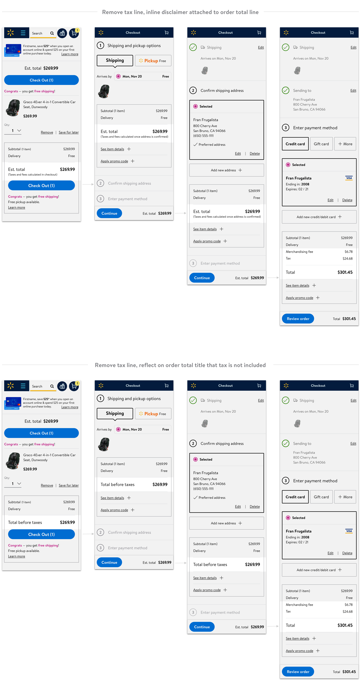
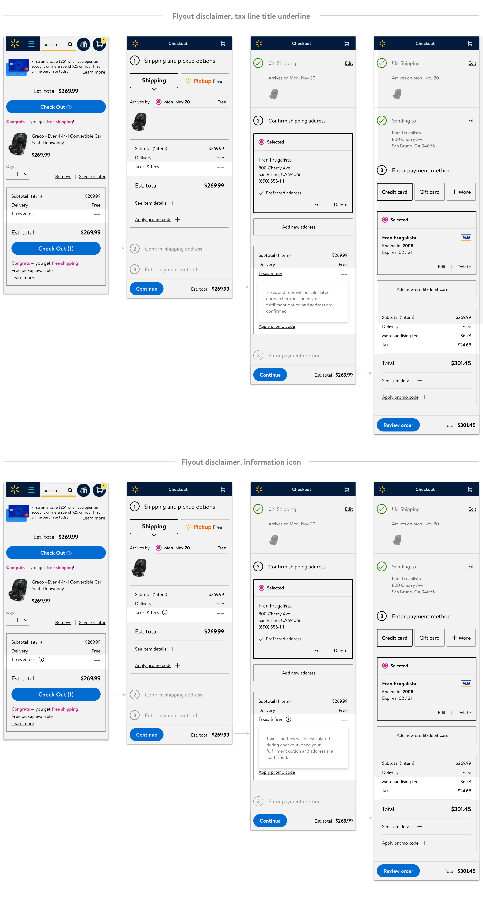

Optimizing disclosure on tax and fees for Walmart customers
Error flow - E2E experience
My role
UI/UX designer - drove design from concept to launch
Cross-functional team
Product Manager, Design Researcher, Content Strategist, and support from design team
Overview
Price is one of the major factors for any purchase decision. According to Baymard's UX benchmark, when customers have a difficult time estimating what they will need to pay for their order in total, many will be reluctant to enter checkout flow.

We keep transparent about the total cost of an order upfront before asking our customers to initiate checkout. On top of item subtotal, we disclose additional costs upfront, such as shipping, taxes, and fees, to help our customers make informed decisions and manage budgets easily. Yet from Voice of Customers data, we realized our customers have higher expectations on the accuracy of the cost revealed upfront. On the line for taxes and fees, we constantly display an amount, which can be different from what the customer will be eventually charged when their fulfillment address is confirmed during checkout. Before that tax call happens, the tax amount on POS is only an estimate, pure math, based on the IP Geotargeting or a manual zip code input. The line title is labeled as “taxes and fees,” but frankly any additional fees will not be disclosed until the tax call either.

With that back-end logic in mind, we decided to improve the customer’s perception of trust by optimizing the discourse of taxes and fees during transaction. We explored designs to hide amount for taxes and fees before it’s calculated based on the fulfillment address. Back in October 2019, we rolled out an A/B test with the new approach and noticed a positive lift in GMV (+2.6%) and visitor conversion rate (+1.6%).

Usability gap
Through a usability study, we learned the design decision can be further tweaked to better address customers’ mental modal.

Customers understood "--" meant that it was not yet calculated. However, customers were confused why Walmart cannot estimate the taxes and fees if they have a zip code to base it on. Customers initially thought that updating the zip would show them est. taxes & fees but then double guessed themselves as it currently doesn’t show an estimated amount.
1. There’s the solution, but no explanations on the problem. We attempt to nudge customers to continue with a suggested address; however, the message on the validator doesn’t provide much context on the cause of this blocker and corresponding consequences of an invalid address.
2. There’s no visibility of the entered address. It’s hard to catch the discrepancies between entered and suggested addresses, without aligning them together for side-by-side comparison.
Minimal impact of removing zipcode from POS
There wasn’t additional bandwidth to weave research studies into the timeline to gain customer insights on the current design. Fortunately, as address validation is a well-studied domain, I was able to find the North Star to base my critique on. My main references were Jakob Nielson’s usability heuristics and Baymard’s UX benchmark of 60 major ecommerce sites on designing for address validators.

Competitive analysis
Before jumping into ideation, I did a competitive analysis on what ecommerce sites are

Ideation
Option 1 - displaying inline partners to capture their feedback during the ideation and iteration. These syncs really helped me to grow as a designer, learning from the team, speaking up for my design decisions, and pushing back as a UX advocate.
I initiated lots of critique sessions with my design team and cross-functional partners to capture their feedback during the ideation and iteration. These syncs really helped me to grow as a designer, learning from the team, speaking up for my design decisions, and pushing back as a UX advocate. 
I initiated lots of critique sessions with my design team and cross-functional partners to capture their feedback during the ideation and iteration. These syncs really helped me to grow as a designer, learning from the team, speaking up for my design decisions, and pushing back as a UX advocate. 
Detail oriented
After mapping out the checkout flow for both return and guest customers, a navigation inconsistency issue caught my eyes.

Further iterations

The buy-in solution
Taking all into account, I had another round of design iteration and came up with a solution that got all the stakeholders on board. I proposed to turn the validator from an in-page component to a standalone modal. A modal simplifies the information hierarchy, which really helps to explain the complicated navigation logic between the main and sub checkout flows.

Design specs for development
I delivered a full stack of annotated design specs for responsive web and native apps development; 6 address validation use cases, with 2 customer flows for each. As a wrap, I contributed to the VQA session and identified several key FE discrepancies before rolling out the new design for A/B testing in August.

Takeaways
System column Following the same design process, I was able to deliver detailed design specs for development. All use cases, all breakpoints, all platforms. The design has just launched with an A/B testing in August.